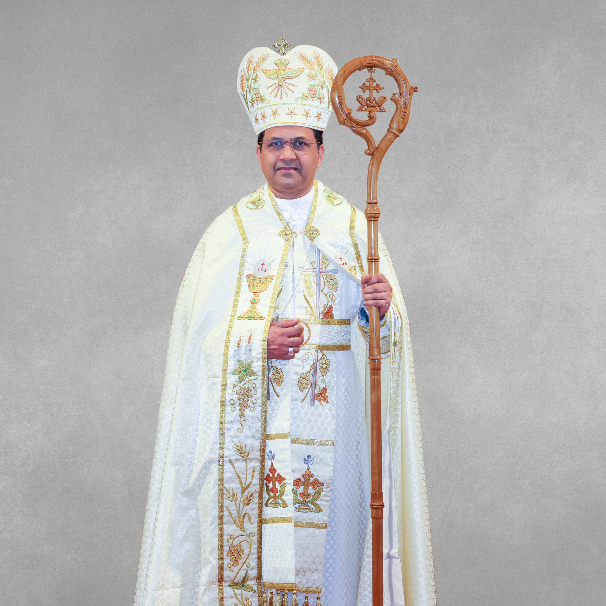

SYRO-MALABAR EPARCHY OF ST. THOMAS APOSTLE
Melbourne, Australia

MAR JOHN PANAMTHOTTATHIL CMI
Bishop, Syro Malabar Eparchy of Melbourne
Current BishopMAR BOSCO PUTHUR
Bishop Emeritus, Syro-malabar Eparchy of Melbourne
Bishop EmeritusMSGR. FRANCIS KOLENCHERRY
Vicar General, Syro-malabar Eparchy of Melbourne
Vicar GeneralFR. SIJEESH PULLANKUNNEL
Chancellor, Syro-malabar Eparchy of Melbourne
ChancellorThe Syro-Malabar Catholic Church is a Major Archiepiscopal Church in full communion with the Apostolic See of Rome. The Church is headed by the Major Archbishop of Syro Malabar Church, Mar Raphel Thattil. It is one of the 23 sui iuris (autonomous) Eastern Catholic Churches in the Catholic communion. It is the largest Eastern Catholic Church. The Syro-Malabar Church follows the East-Syrian liturgy which dates back to 3rd century.
Until the late 16th century, Bishops were appointed and sent by the Patriarch of the East Syrian Church, who governed the St. Thomas Christians. However, the arrival of the Portuguese in India marked a new era in the life of the Church. Hierarchically they were brought under the rule of the Latin Bishops after the Synod of Diamper.
In 1653 in the infamous 'Coonan Cross Oath' at Mattancherry, many St. Thomas Christians vowed to disobey the Latin hierarchy. Thus began a rift among St. Thomas Christians, who were one Church until that time. Eventually, some returned to the jurisdiction of the Latin rule to be in communion with the Pope, while others stood firm in their stand of opposition to the Portuguese.
Those who continued under the Latin rule formed the community that became the Syro-Malabar Church. Those who remained opposing the Portuguese encountered the Jacobite Patriarch and eventually became Jacobites, of which a fraction reunited with the Catholic Communion in 1930; they are now known as the Syro-Malankara Church.
Finally, after 230 years of Latin governance, the Syro-Malabar Church hierarchy was established in India, in 1923.
Since then it has grown rapidly, and in 1992 Pope John Paul ll elevated it to the status of a Major Archiepiscopal Sui iuris Church with the title of Ernakulam-Angamaly. It is one of the four Major Archiepiscopal Churches, the other three being the Syro-Malankara Church, Ukrainian Church and the Romanian Church.
The contribution of the religious, charitable and educational institutions managed by the different dioceses of the Church, to the welfare of Kerala and other states of India, is immense. The widespread diaspora of the Indian community outside the continent has also seen the Syro-Malabar faithful spread to regions outside Kerala, and it has a large presence in Australia and New Zealand.
On 23 December 2013 Holy Father Francis established The Syro-Malabar Eparchy of St Thomas the Apostle, Melbourne for Australia, the second Eparchy outside the territory after Chicago, USA. Pope Francis appointed Bishop Bosco Puthur, then Curia Bishop of Major Archiepiscopal Curia, Kerala, as the first Bishop/Eparch of the new Eparchy. Bishop Bosco Puthur was installed on 25 March 2014 in Melbourne.
On 31st March 2021 Pope Francis extended the Jurisdiction of Syro Malabar Eparchy of St. Thomas the Apostle to New Zealand and other Countries in Oceania.